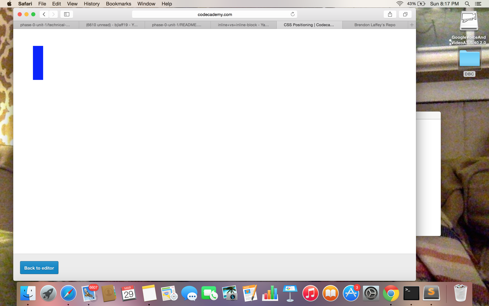
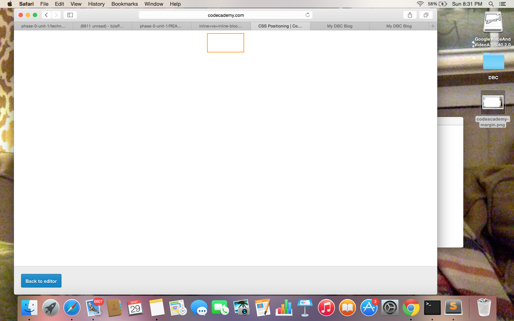
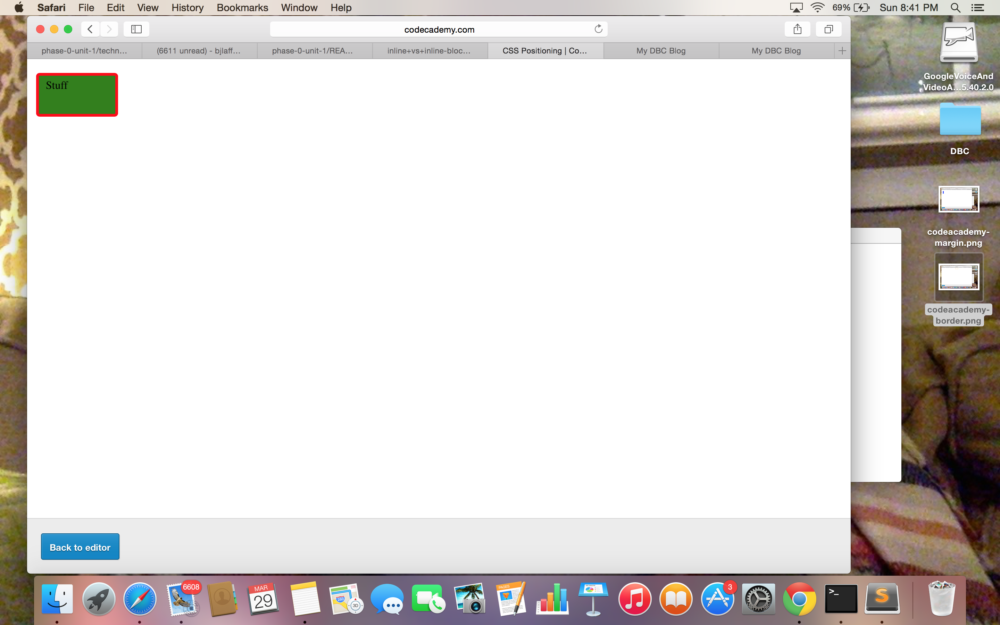

Margins and Borders and Paddings, Oh my!
A Quick look at Margins, Borders, and Paddings in CSS
March 29th, 2015
Margins
In CSS, the margin is a property that is the space that surrounds an element.(which could be a block of text, or an image, perhaps! And, when margins are involved, is typically set in a property such as div or section.) The margin is what we use to set the distance between each element. It is essentially what positions the elements on a page. In non-technical terms, it is used to put everything where we want it to go! Here is a little piece of html code showing a margin and it's value(how big the space around it is.)
/* div { margin: 50px 30px 50px 30px } */
*NOTE: In the above code , the margin values are always set in clockwise in relation to the element, meaning: first value is the top margin, second value is the right margin, third value is the bottom margin, and fourth value is the left margin.
You don't always have to set each side to a specific margin.You could just enter /* margin: 50px */ and it would simply set your margin to be 50px from the top and from the left of the page. It will use the value 50px to set your margin for the ends and the sides of your element. So, in reality, it is simply pushing your element 50px towards the bottom and towards the right. Below is an example, which is a screenshot from this great programming language learning website, CodeAcademy:

Borders
The border is quite simply the surrounding edge of the element. It is what "blocks" the content of the element in, so to speak. You can set your borders to specific colors, thickness, and even decide if you want it to be a solid line, or dashed. The code below is an example of how you could style a border in your css file:
/* div { border: 2px solid orange; } */
*NOTE: The code above would set a border around the div, and it would be 2 pixels thick, and be a solid orange color all the way around. Below you can see what this would look like with another screenshot from codeacademy:
Padding
I like to think of the padding as being the margin of the content inside the border. What the padding does is set a certain amount of space between the content itself and the border of the element. Here is some code below to show the padding property:
/* div { padding-top: 5px; padding-left: 10px; } */*NOTE: The above code would push the content 5 pixels from the top of the border, and 10 pixels from the left of the border. Below is a visual example from-you guessed it!- Codeacademy:
